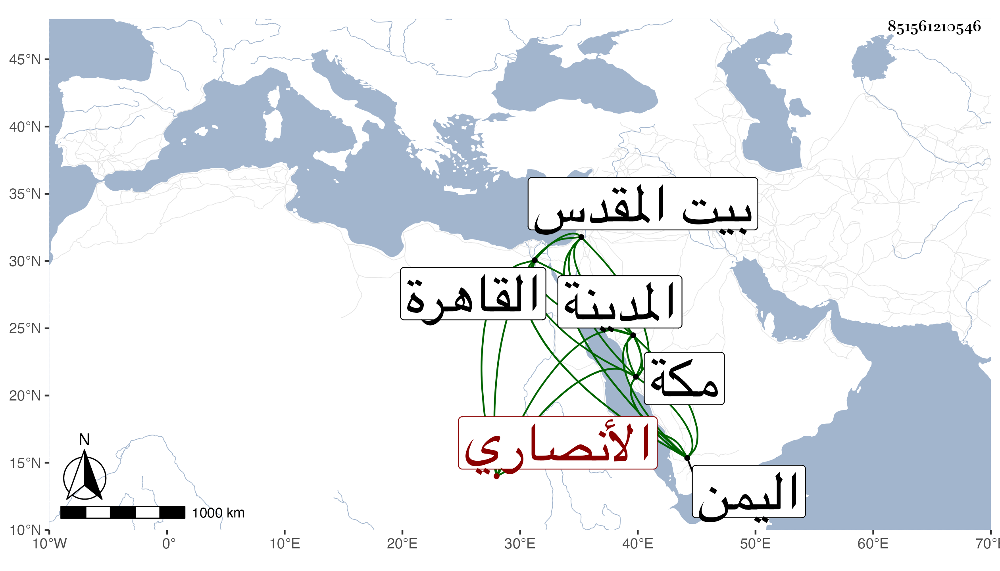

0902Sakhawi.DawLamic.ITO20230111-ara1.EIS1600.851561210546
Biography ID: 851561210546
435
محمد الجمال أبو عبد الله الأنصاري أخو اللذين قبله وهو أصغرهما ويعرف بالمرشدي وهو جد أبي حامد محمد بن عمر الآتي والماضي أبوه . ولد في سنة ثلاث وستين وسبعمائة بمكة وسمع بها من العز بن جماعة السيرة الصغرى له وغيرها كالبردة ومن الجمال بن عبد المعطي والنشاوري في آخرين ، وأجاز له الصلاح وابن أميلة وابن الهبل وابن النجم وغيرهم تجمعهم مشيخته للتقي بن فهد . وتلا لأبي عمرو ثم لابن كثير علي يعقوب بن عبد الرحمن بن عبد الكريم العمري المالكي ولقي شخصا يسمى محمد بن علي بن محمد الخطيب الصوفي فصافحه وشابكه وألبسه الخرقة كما سيأتي في ترجمته . وحدث سمع منه الطلبة وكان خير دينا ورعا زاهدا منجمعا عن الناس زار النبي صلى الله عليه وسلم أكثر من خمسين سنة مشيا على قدميه . وكذا زار بيت المقدس ثلاث مرار ولقي بها رجلا صالحا كانت عنده ست شعرات مضافة للنبي صلى الله عليه وسلم ففرقها عند موته على ستة أنفس بالسوية كان هذا أحدهم كما سبق في ترجمة ولده عمر . ودخل القاهرة وبلاد اليمن . وهو أحسن إخوته ديانة وأكثرهم إنجماعا . مات بالمدينة النبوية في رمضان سنة تسع وعشرين . ذكره ابن فهد في معجمه . وباختصار المقريزي في عقوده وعين وفاته بمكة فوهم قال وكان منجمعا عن الاختلاط بالناس . وقال شيخنا في معجمه : سمعت منه قليلا ببعض بلاد اليمن قال وهؤلاء الأخوة الثلاثة اشتهر كل منهم بنسبة غير نسبة الآخر أما الأكبر وهو المصري فنسبته حقيقة لأن ذلك أصله وأما الأوسط وهو المرجاني فانتسب إلى بعض أجداده من قبل الأم وأما هذا فلا أدري لمن انتسب . قلت لقول الشيخ أحمد المرشدي لأبيه وأمه حامل به : هو ذكر فسمه محمدا المرشدي .
